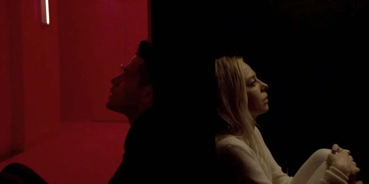

The People Who Care
"There are some people out there…
And it doesn’t happen a lot.
It’s rare.
But they refuse to let you hate them.
In fact, they care about you in spite of it.
And the really special ones, they’re relentless at it.
Doesn’t matter what you do to them. They take it and care about you anyway.
They don’t abandon you, no matter how many reasons you give them.
No matter how much you’re practically begging them to leave.
And you wanna know why?
Because they feel something for me that I can’t…
They love me."

The Code Of Chaos
“What if changing the world was just about being here,
by showing up no matter how many times we get told we don’t belong,
by staying true even when we’re shamed into being false,
by believing in ourselves even when we’re told we’re too different?
And if we all held on to that, if we refuse to budge and fall in line,
if we stood our ground for long enough,
just maybe…
The world can’t help but change around us.”
Changing The World
"I do see the beauty in the rules,
the invisible code of chaos hiding behind the menacing face of order."